文中の将来に関する事項は、当連結会計年度末現在において当社グループが判断したものであります。
（1）会社の経営の基本方針
当社グループは、国内飲料事業を取り巻く経営環境が大きく変化する中、グループ一丸となって将来の持続的成長をめざすべく、2014年に「グループ理念・グループビジョン」「ブランドメッセージ」を制定しています。
「人と、社会と、共に喜び、共に栄える。その実現のためにDyDoグループは、ダイナミックにチャレンジを続ける。」というグループ理念は、創業以来培ってきた「共存共栄」の精神を謳っています。お客様、従業員、取引先、地域社会、株主といったすべてのステークホルダーの皆様との共存共栄を図りながら、企業の成長とともに従業員が成長していくために、チャレンジする企業風土の醸成に取り組み、当社グループの文化である「共存共栄」の精神を未来へとつないでいきます。
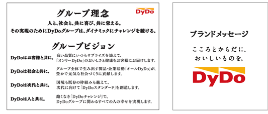
また、当社グループのコアビジネスである国内飲料事業は、清涼飲料という消費者の皆様の日常生活に密着した製品を取り扱っており、セグメント売上高の約90％は地域社会に根差した自販機を通じた販売によるものです。また、自社工場を持たず、生産・物流を全国の協力業者に委託するファブレス経営により、当社は製品の企画・開発と自販機オペレーションに経営資源を集中し、業界有数の自販機網は当社グループの従業員と共栄会（当社商品を取り扱う自販機運営業者）により管理しています。
このような当社独自のビジネスモデルは、ステークホルダーの皆様との信頼関係によって成り立っていることから、「人と、社会と、共に喜び、共に栄える。」ことが会社としての責務であり、経営上の最重要課題であると認識しています。そして、その実現のために、「ダイナミックにチャレンジを続けていく」ための基盤として、透明・公正かつ迅速・果断な意思決定を行うための仕組みであるコーポレート・ガバナンスを継続的に改善していくことが、株主共同の利益に資するものと考えています。
（2）経営戦略等
当社グループは、「人と、社会と、共に喜び、共に栄える。その実現のためにDyDoグループは、ダイナミックにチャレンジを続ける。」のグループ理念のもと、2030年のありたい姿を示す「グループミッション2030」“世界中の人々の楽しく健やかな暮らしをクリエイトするDyDoグループへ”を定めています。SDGs のめざす未来の実現に、事業を通じて貢献することが私たちのミッションであり、持続可能な社会の実現によって、私たちも持続的に成長することができるとの思いが、その背景にあります。「共存共栄」の精神は、SDGs の原則である「誰一人取り残さない」にも通じるものです。2030年に向け、世界中の人々が楽しく健やかに暮らせる持続可能な社会の実現に貢献し、社会価値・環境価値・経済価値の創出による持続的成長と中長期的な企業価値向上をめざしていきます。
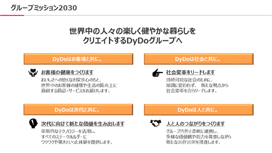
「グループミッション2030」では、グループ理念・グループビジョンのもと、2030年までに成し遂げるべきミッションを4つのテーマごとに示し、その達成に向けたロードマップを描いています。具体的には、2030年までの期間を「基盤強化・投資ステージ」「成長ステージ」「飛躍ステージ」の3つに区分し、それぞれのステージに応じた事業戦略を推進することにより、競争優位性の高いビジネスモデルを構築していきます。現在は、将来の飛躍に向けた「成長ステージ」として、2023年1月期を初年度とする5ヵ年の「中期経営計画2026」に取り組み、国内飲料事業の再成長に注力しつつ、長期視点での事業育成に取り組んでいます。
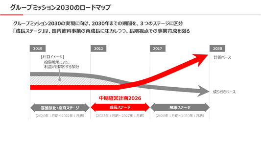
また、当社グループは、「グループミッション2030」実現への取り組みを通じて、サステナビリティ経営を推進していきます。近年、地球規模での人口の増加や、それに伴う資源・エネルギー・食料の逼迫、環境問題、高齢社会の到来や格差の拡大等、企業が直面している課題は多岐にわたっています。このような環境や社会の変化による潜在的なリスクに備えると共に、事業を通じて社会的課題の解決を図り、豊かで持続可能な社会の実現へ貢献していくことが、企業としての責務です。当社グループは、「中期経営計画2026」のスタートにあたり、サステナビリティの観点から、中長期的な経営課題について議論し、「グループミッション2030」の実現に向けた8つのマテリアリティを特定しました。当社グループのマテリアリティへの取り組みを通じて、世界中の人々が楽しく健やかに暮らせる持続可能な社会の実現に貢献し、社会価値・環境価値・経済価値の創出による持続的成長と中長期的な企業価値向上をめざしていきます。
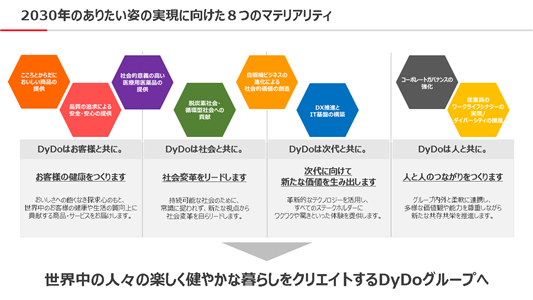
（3）経営上の目標達成状況を判断するための客観的な指標
当社グループは、「グループミッション2030」の経営指針として、社会価値・環境価値・経済価値の創出に向けた定性的・定量的な指標を以下の通り定めています。
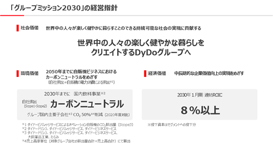
① 経済価値創出に向けた財務KPI
当社グループは、「グループミッション2030」における事業ポートフォリオの基本方針として、「国内飲料事業のイノベーション」「海外での事業展開の拡大」「非飲料事業での第2の柱の構築」の3つを掲げています。
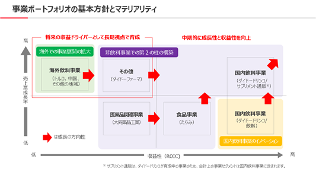
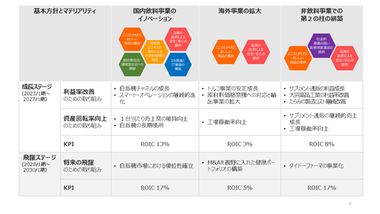
2030年のありたい姿の実現に向けて、事業の「稼ぐ力」の強化を図るべく、経済価値創出に向けた財務KPIは、資本生産性指標である「ROIC」を採用しています。「成長ステージ」と「飛躍ステージ」における目標数値をそれぞれ設定すると共に、従業員一人ひとりが資本効率を意識した取り組みを推進することができるよう、ROICツリーの活用による理解浸透を図っています。
② 環境価値創出に向けた非財務KPI
近年、気候変動をはじめとする環境問題への企業の取り組み姿勢に対するステークホルダーからの評価や市場の価値観の変化は、消費者の商品・サービスの選択に大きく影響するものとなっており、気候変動抑制のため、世界的規模でのエネルギー使用の合理化や地球温暖化対策等の法令等の規制も強まっています。また、気候変動に起因する水資源の枯渇、コーヒーをはじめとする原材料への影響、大規模な自然災害による製造設備の被害等のサプライチェーンに関わる物理的リスクの高まり等、グローバル社会が直面する重要課題である気候変動問題への対応は、当社グループの持続的成長の実現に向けた大きな経営課題であると認識しています。
サステナビリティに関する詳しい取り組みについては、「第2 事業の状況 2「サステナビリティに関する考え方及び取組」」に記載の通りです。
（4）優先的に対処すべき事業上及び財務上の課題
当社グループは、2030年のありたい姿を示す「グループミッション2030」の実現に向けた「成長ステージ」として、2023年1月期を初年度とする5ヵ年の「中期経営計画2026」を策定しています。
「国内飲料事業の再成長」「海外事業戦略の再構築」「非飲料領域の強化・育成」の3つの基本方針のもと、「グループミッション2030」の実現に向けたマテリアリティに対応した成長戦略を推進するとともに、サステナビリティ経営の推進による組織基盤の強化を図り、社会価値・環境価値・経済価値の創出による持続的成長と中長期的な企業価値の向上をめざしていきます。
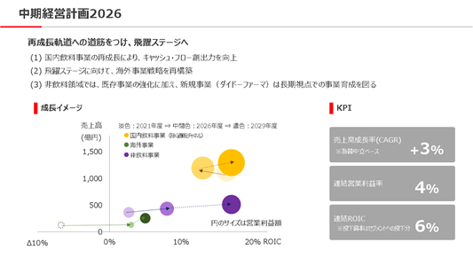
① 国内飲料事業の再成長
当社グループのコアビジネスである国内飲料事業は、創業来、「お客様の求めるものをお客様に身近なところでお届けする」独自のビジネスモデルによって発展してきました。業界有数の自販機網と、直販と共栄会によって一体的に運営する品質の高いオペレーション体制は、当社グループの大きな資産であり、キャッシュ・フローの源泉ともなっています。
コロナ禍を経て、消費者の行動様式は大きく変容し、自販機市場においては本格的な販売回復に至らない中、自販機に対する業界各社の取り組み姿勢は二極化し、上位寡占化の傾向がより強いものとなりました。このような状況の中、当社グループは、コロナ禍を契機とした社会変革をビジネスチャンスと捉え、「自販機ビジネスの進化による社会的価値の創造」をマテリアリティに掲げ、持続可能な自販機ビジネスモデルの構築にチャレンジしています。足元では、アサヒ飲料株式会社との共同出資により自販機の直販チャネルを一体的に運営する新会社「ダイナミックベンディングネットワーク株式会社」を設立するなど、規模を活かした自販機オペレーションの生産性向上に努めるほか、AIをはじめとした最新のテクノロジーを活用し、スマート・オペレーション※体制をより高度なものに進化させるよう取り組んでいます。
今後につきましては、国内飲料事業の2030年のありたい姿を「自販機市場において絶え間ない挑戦と共創で新しい価値を提供し、トップランナーとして業界をリードし続けます。」と定め、最新のテクノロジーを活用したスマート・オペレーションのさらなる進化に取り組むと共に、DyDoの店舗である自販機を通じて、お客様の求める価値をお届けすることにより、自販機市場における確固たる優位性を確立していきます。
※デジタル技術を活用し効率化を実現した自販機オペレーションを示す当社の造語。
② 海外事業戦略の再構築
当社グループの海外飲料事業の中で大きなウエイトを占めるトルコ飲料事業は、豊富な若年層人口を背景に高い成長ポテンシャルを有しています。足元では、引き続きトルコ国内のインフレの急加速等、同事業を取り巻く経営環境は厳しい状況が続いていますが、機動的な価格改定をはじめとした現地の営業施策の奏功や、トルコ国民にとって馴染みの深いローカルブランドを複数保有していることなど、中長期的な成長が期待できる事業と位置付けています。また、中国飲料事業につきましては、現地の無糖茶ニーズに応え2021年より現地製造を開始し、中国国内の無糖茶市場の拡大に貢献するなど、収益基盤の拡充を実現することができています。
今後につきましては、海外飲料事業の2030年のありたい姿を「世界中の人々の健康を支えるグローバルブランドを生み出します。」と定め、既存のトルコ・中国飲料事業の基盤を活かすほか、2024年2月にはポーランド共和国で清涼飲料を製造・販売しているWosana S.A.を買収しており、ポーランド市場への進出も行っていきます。これからも、海外事業戦略の再構築を進め、健康ニーズの高まりに対応したグローバルブランドの育成にチャレンジしていきます。
③ 非飲料領域の強化・育成
当社グループは、「こころとからだにおいしい商品の提供」をマテリアリティに掲げ、国内飲料事業の再成長、海外事業戦略の再構築と共に、非飲料領域の強化・育成に注力しています。
既存事業におきましては、国内飲料事業を担うダイドードリンコ株式会社が運営するサプリメント等の通信販売事業が、主力商品である「ロコモプロ」を中心に着実な成長を続けているほか、食品事業を担う株式会社たらみは、様々な食感を自在に実現する「おいしいゼリー」を作る技術力とブランド力を大きな強みとして、フルーツゼリー市場においてトップシェアを有し、ドライゼリー市場が縮小する中においても成長を続けています。また、医薬品関連事業を担う大同薬品工業株式会社では、2030年のありたい姿を「健康・美容分野での製造受託企業No.1になります。」と定め、2拠点4工場体制での効率的な生産体制の整備に注力しています。
当社グループの新規事業領域拡大への取り組みとして、希少疾病用医薬品事業に参入すべく設立したダイドーファーマ株式会社は、プロフェッショナル人材の採用を含め、組織体制を整備し、2021年にはライセンス契約を締結、また、2023年には厚生労働省への治療薬の承認申請を行う等、マテリアリティに掲げる「社会的意義の高い医療用医薬品の提供」に向けて、着実な歩みを進めています。
超高齢化社会・健康長寿社会が進展する中、人々の健康・予防・衛生に対する意識の高まりも相まって、今後、ヘルスケア関連市場は着実に成長していくことが想定されます。今後につきましては、お客様の健康と生活の質の向上に貢献すべく、大きな成長が期待されるヘルスケア領域の事業の強化・育成を図り、非飲料事業での第2の柱の構築にチャレンジしていきます。
④ 財務規律と投資戦略
当社グループは、自販機市場での確固たる優位性の確立に向けた取り組みが重要であるとの認識のもと、既存事業から創出される5年間のキャッシュ・フローを元手として600億円以上を、自販機関連資産への再投資に振り向けていきます。なお、この600億円には、安定配当方針のもの継続実施される株主還元も含まれています。
また、新たな事業領域への投資については、別途、内部留保などを財源に営業キャッシュ・フローの2年分を戦略投資枠として設定しており、投資判断にあたっては、当社グループの経営成績及び財政状態等への影響に十分注意を払いながら、定性的・定量的な基準をもとに、適切な投資判断を実行していきます。
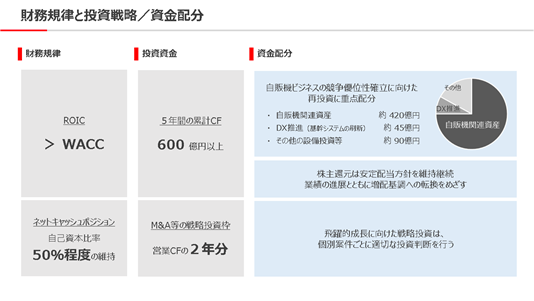
（5）経営環境についての経営者の認識
|
2024年1月期は、円安の進行による物価上昇や日本各地での記録的猛暑、生成AIの普及など、当社のビジネスを取り巻く環境が大きく変わりました。また、新型コロナウイルス感染症が5類感染症に移行して人流が回復したことも、世の中の大きな変わり目となりました。 このような中、外部環境の変化をチャンスと捉えて、各事業で適切な価格改定を実行したほか、スマート・オペレーションやDXの取り組みを推進できたことは、象徴的な成果だと考えています。また、期初には、ダイナミックベンディングネットワーク株式会社を設立し、アサヒ飲料株式会社の直販事業を担っていた3社をダイドーグループに加えたことも、当社にとって大きな変化でした。統合初年度は統一的なシステムの導入を完了させるなど、新組織として着実なスタートを切ることができ、自販機ビジネスの優位性確立に向けた大きな一歩を踏み出すことができました。 2025年1月期にあたっては、「グループミッション2030」の実現に向けて、引き続き8つのマテリアリティに取り組んでいきますが、その中でも特に「こころとからだにおいしい商品の提供」に注力していきます。私たちが人と社会に提供する価値に磨きをかけてこそ、「世界中の人々の楽しく健やかな暮らしをクリエイトするダイドーグループへ」が実現できるものだと考えています。また、マテリアリティの1つである「従業員のワークライフシナジーの実現／ダイバーシティの推進」について、経営戦略を達成するための人的資本経営として改めて考え方を整理し、この度、開示しました。 引き続き不安定な環境下ではありますが、グループミッション2030の実現に向けて、一歩一歩邁進し、チャレンジを続けていきます。
ダイドーグループホールディングス株式会社 代表取締役社長 髙松 富也
|
|
|
文中の将来に関する事項は、当連結会計年度末現在において当社グループが判断したものです。
(1）サステナビリティ
当社グループは、環境に関するマテリアリティとして「脱炭素社会・循環型社会への貢献」を掲げ、2022年1月に、TCFD（気候関連財務情報開示タスクフォース）による提言への賛同を表明するとともに、グループとしてのCO2排出削減目標を設定しております。TCFD提言では、「ガバナンス」「リスク管理」「戦略」「指標と目標」の4つの項目に基づいて開示することを推奨しています。当社グループのTCFDのフレームワークに基づく気候関連情報は、以下の通りです。
① ガバナンス
ⅰ. 気候関連のリスクと機会についての取締役会による監督体制
当社グループは、事業を通じて社会的課題の解決に貢献すべくサステナビリティ課題への取り組みを強化し、持続的成長の実現と中長期的な企業価値向上をめざしています。当社グループのサステナビリティ経営全体の方針の検討及び承認、全社的なサステナビリティプログラムの決定及び改善指示等を行うことにより、当社グループのコーポレートブランドの価値向上を図ることを目的として、「グループサステナビリティ委員会」を年2回開催するほか、必要に応じて都度開催することとしています。取締役会は、「グループサステナビリティ委員会」において検討・協議された内容について報告を受けることにより、当社グループの気候変動リスクと機会への対応方針及び実行計画について監督を行う体制としています。
ⅱ. 気候関連のリスクと機会を評価・管理する上での経営者の役割
代表取締役社長は、当社グループのサステナビリティ経営における最高責任者として、「グループサステナビリティ委員会」の委員長の職務を担っています。
② リスク管理
ⅰ. 気候関連リスクの特定・評価プロセス
当社グループは、TCFDが提唱するフレームワークに則り、シナリオ分析の手法を用いて、2050年時点における外部環境の変化を予測し、気候変動が事業に与えるリスクや機会についての分析を実施しました。2024年1月期は、国内飲料事業、医薬品関連事業及び食品事業に加え、海外飲料事業に関するシナリオ分析を実施したほか、当社グループのビジネスにおいて、最も影響度の高い国内飲料事業における財務インパクトを試算しています。
ⅱ. 気候関連リスクの管理プロセス及びグループリスク管理との統合状況
事業の持続的成長を実現するためには、環境や社会の変化を適切に把握し、事業におけるリスクの低減と機会の最大化に取り組む必要があるものと認識しています。当社グループは、リスクマネジメントとサステナビリティ経営の推進の進捗管理（サステナビリティプログラム）を連動させるべく、代表取締役社長を委員長とする「グループリスク管理委員会」「グループサステナビリティ委員会」を設置し、両委員会を中心としたそれぞれの取り組みを連動させながらマネジメントを行っています。
気候関連リスクは中長期的に顕在化する可能性を有することから、短期のみならず、中長期の時間軸で、低炭素社会への移行に伴うリスク及び気候変動の顕在化に伴う物理的リスクを評価する体制を構築すべく取り組みを進めています。
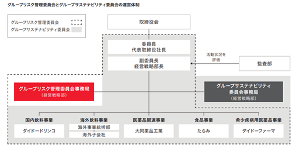
③ 戦略
ⅰ. 当社グループの気候関連のリスクと機会の概要と事業及び財務への影響
シナリオ分析に基づく気候関連リスク・機会の評価結果は、以下の通りです。
（移行リスク）注釈のない記載については、中核事業である国内飲料事業を対象としています。
|
リスク／機会項目 |
事業インパクト |
↑：非常に大きな影響 ↗：やや大きな影響 →：軽微な影響 |
現時点で実施している対応策 |
||||
|
中分類 |
小分類 |
リスク /機会 |
考察 |
1.5℃ |
4℃ |
||
|
政策・ 規制 |
カーボンプライシング |
リスク |
炭素税導入に伴う、自販機オペレーションコスト、自販機調達にかかるコスト、配送費の増加 |
↑ |
↗ |
・スマート・オペレーションの推進 ・ルート車両のEV化の導入検討 |
|
|
・ダイドー・シブサワ・グループロジスティクス株式会社による配送の最適化 |
|||||||
|
・自販機の長寿命化：2030年までに15年 |
|||||||
|
リスク |
炭素税導入に伴う、自販機設置先の電気代負担によるコスト増、自販機引上げリスク |
↑ |
↗ |
・省エネ自販機の展開 ・自販機ビジネスのカーボンニュートラルの検討 |
|||
|
リスク |
水使用量・消費量の削減規制により、各種飲料の生産量が減少 ※海外飲料事業 |
↑ |
↗ |
・トルコ国外での水源および製造拠点の確保 |
|||
|
リスク |
炭素税の導入により、原材料コスト、包材コスト、エネルギーコスト、物流費など、製造に関連する全般的な費用が高騰 ※医薬品関連事業・食品事業 |
↑ |
↗ |
・省エネに向けた改善活動及び再生可能エネルギーの導入検討 ・調達先の分散などの検討 |
|||
|
機会 |
炭素税導入に伴う、カーボンニュートラルに対応した自販機のニーズの上昇 |
↑ |
↗ |
・計画的な新品自販機の展開 ・自販機ビジネスのカーボンニュートラルの検討 |
|||
|
市場 |
需要の 変化 |
リスク |
廃棄処理時に排出するCO2への炭素税導入に伴う、廃棄に関わる処理費用（商品・自販機）の増加 |
↑ |
↗ |
・容器のリデュース ・ラベルを極小化した商品展開 ・自販機の長寿命化：2030年までに15年 |
|
|
リスク |
消費者や自販機設置先から、環境負荷が高い商品や販売チャネルが選ばれなくなる |
↑ |
↗ |
・自販機ビジネスのカーボンニュートラルの検討 ・環境配慮型商品の開発 ・「みんなの LOVE the EARTH PROJECT」※の推進 |
|||
|
機会 |
消費者や自販機設置先から、環境負荷が低い商品や販売チャネルが選ばれるようになる |
↑ |
↗ |
||||
※従業員一人ひとりが事業活動のみならず、自身の日常生活においても環境配慮を意識した行動を促進する取り組み
（物理的リスク）注釈のない記載については、中核事業である国内飲料事業を対象としています。
|
リスク／機会項目 |
事業インパクト |
↑：非常に大きな影響 ↗：やや大きな影響 →：軽微な影響 |
現時点で実施している対応策 |
||||
|
中分類 |
小分類 |
リスク /機会 |
考察 |
1.5℃ |
4℃ |
||
|
慢性 |
平均気温上昇 |
リスク |
コーヒー豆などの原材料において、調達先が限定されることによる調達コスト増、品質の低下 |
↗ |
↑ |
・コーヒー豆の分散調達、生産地に対する情報収集 ・コーヒーのみに依存しない品揃え |
|
|
リスク |
平均気温の上昇に伴い、特に植物由来の原材料において、調達量の制限並びに大幅な価格上昇 ※医薬品関連事業・食品事業・海外飲料事業 |
↗ |
↑ |
・複数社購買・産地の分散等の検討 ・代替方法の検討 |
|||
|
リスク |
自販機オペレーション活動が過酷な労働条件になることによる労働者不足 |
↗ |
↑ |
・スマート・オペレーションの推進 |
|||
|
海面の上昇 |
リスク |
・自販機の設置可能エリアの減少 ・販売拠点の減少もしくは見直し ・日本全国で多数の人が浸水や冠水の影響を受け、販売減少 |
↗ |
↑ |
・地域・ロケーションに偏りが少ない自販機網 |
||
|
熱中症搬送人口の増加 |
機会 |
熱中症対策飲料のニーズが高まりによる、自販機設置要望の増加 |
↗ |
↑ |
・トリプルペット自販機※の導入増 ※ペットボトル飲料の販売構成比を上げることを可能にする自販機 |
||
|
汚染・水質悪化 |
リスク |
・土壌汚染や水質の悪化により商品の品質に影響が生じ、製造の停止 ・浄化設備の追加設置などのコスト増 ※海外飲料事業 |
↗ |
↑ |
・複数製造拠点の確保 ・製造委託の検討 |
||
|
急性 |
自然災害の激甚化 |
リスク |
自販機調達先の稼働停止による供給停止 |
↗ |
↑ |
・自販機の長寿命化：2030年までに15年 |
|
|
リスク |
・洪水・台風により自販機の浸水被害が多発し、収益へ影響 ・サプライチェーンが寸断し、お客様へ商品を届けることができなくなり、売上・利益が低減 |
↗ |
↑ |
・スマート・オペレーションの推進 ・拠点別ハザードマップの作成 |
|||
|
リスク |
異常気象（大型台風や局地的な豪雨など）により、工場や倉庫の崩壊、従業員の被災などが発生し、製造が長期間休止する ※医薬品関連事業・食品事業 |
↗ |
↑ |
・事業継続計画（BCP）の整備 ・外部倉庫拡大検討 |
|||
ⅱ. 気候関連リスクと機会への対応・戦略のレジリエンス
当社グループの中核事業である国内飲料事業を担うダイドードリンコ株式会社は、製造と物流を全国各地の協力企業に委託するファブレス経営を採用し、商品開発と主力販路である自販機のオペレーションに経営資源を集中しています。2050年の自販機ビジネスにおけるカーボンニュートラル実現をめざして、気候変動への緩和策と適応策を強化し、脱炭素社会・循環型社会の形成に貢献していくことが、当社グループのサステナビリティに係る重要課題であると認識しています。
低炭素社会への移行リスク（1.5℃シナリオ）といたしましては、炭素税の導入を含む規制強化により、配送コストや自販機オペレーションにかかるコストの増加が見込まれるほか、自販機設置先の電気代負担増による引上げリスクが高まる等、国内飲料事業の売上構成比のうち約90％を占める自販機チャネルの事業運営に多大な影響が出ることが想定されますが、営業車両のEV化やスマート・オペレーションの推進による車両台数の削減に取り組むほか、省エネ型自販機の計画的投入や、カーボンニュートラルに対応した“お客様と共にサステナブルな未来を創る”自販機「LOVE the EARTHベンダー」の展開等により、お客様とのパートナーシップを推進し、事業機会の創出につなげていきます。
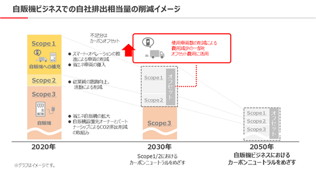
気候変動の顕在化に伴う物理的リスク（主に4℃シナリオ）としましては、自然災害の激甚化により、自販機の水没や生産工場・配送拠点の浸水等による被害が多発するリスクも想定されます。また、自販機ビジネスは、労働集約型産業の側面を持つことから、夏季の平均気温の上昇が、自販機オペレーションに係る労働環境に影響を及ぼし、労働力不足のリスクが高まることも懸念されます。
気候変動による平均気温の上昇は、熱中症対策飲料の販売増が事業機会となり得る一方で、主要原材料であるコーヒー豆の調達に大きな影響が出るものと認識しています。
当社グループは、これらのリスクと機会に対応していくために、日頃からコーヒー豆等の生産地に対する情報収集を行い、分散調達できる体制を築き上げるとともに、コーヒーのみに依存しない魅力ある商品ラインアップの拡充に取り組んでいます。また、スマート・オペレーション体制の構築に加え、AIの導入によって現場における働き方の多様化を図る等、労働力不足の時代への対応を進めるほか、個々のロケーションの特性にあった品揃えの最適化に努める等、自販機の店舗としての魅力をより高めていきます。
なお、国内飲料事業においては、全国各地の協力工場へ商品の生産を委託することや、全国広範囲に自販機を設置することにより、リスク分散を図っています。
④ 指標及び目標
ⅰ. 気候関連リスク・機会の管理に用いる指標及び目標
当社グループは、2022年1月、サステナビリティの観点をより一層事業活動に組み込むため、「脱炭素社会・循環型社会への貢献」を環境に関するマテリアリティとして特定し、環境価値創出に向けた非財務KPIとして、当社グループにおけるCO2排出削減目標を設定しています。
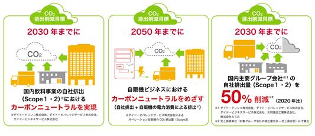
また、国内飲料事業においては、循環型社会への貢献に向けて、以下の3つの重点目標を設定しています。
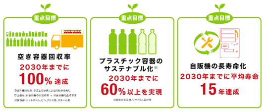
ⅱ. CO2排出量
当社グループの国内主要グループ会社※におけるScope1、Scope2及び重要なScope3（自販機の電力消費による排出）のCO2排出量は、以下の通りであります。
※ダイドードリンコ株式会社、ダイドービバレッジサービス株式会社、ダイドービジネスサービス株式会社、大同薬品工業株式会社、株式会社たらみ
CO2排出量実績（2022年4月1日から2023年3月31日）
単位：tCO2
（カッコ内の数値は基準年度からの増減率）
|
|
国内飲料事業 |
医薬品関連事業 |
食品事業 |
合計 |
|
Scope1 |
7,195 |
4,333 |
3,734 |
15,262 |
|
Scope2 |
1,511 |
3,778 |
4,273 |
9,562 |
|
小計 |
8,706 (90.6%) |
8,111 (106.7%) |
8,007 (98.1%) |
24,824 (97.9%) |
|
|
|
|
|
|
|
Scope3 （カテゴリ13） |
91,952 (94.4%) |
|
|
91,952 (94.4%) |
CO2排出量実績 売上高原単位（2022年4月1日から2023年3月31日）
単位：tCO2/百万円
（カッコ内の数値は基準年度からの増減率）
|
|
国内飲料事業 |
医薬品関連事業 |
食品事業 |
合計 |
|
Scope1 |
0.07 |
0.35 |
0.19 |
0.11 |
|
Scope2 |
0.01 |
0.30 |
0.22 |
0.07 |
|
小計 |
0.08 (95.4%) |
0.65 (88.0%) |
0.41 (104.8%) |
0.17 (101.2%) |
|
|
|
|
|
|
|
Scope3 （カテゴリ13） |
0.84 (99.3%) |
|
|
0.84 (99.3%) |
注1：国内飲料事業における排出量実績は、ダイドードリンコ株式会社、ダイドービバレッジサービス株式会社及びダイドービジネスサービス株式会社が対象となります。
注2：ダイドードリンコ株式会社、ダイドービバレッジサービス株式会社及びダイドービジネスサービス株式会社の国内87拠点における温室効果ガス排出量情報について第三者検証を受けています。
注3：売上高原単位は、対象グループ会社の排出量合計（期間＝2022年4月1日～2023年3月31日）÷売上高合計（期間＝国内飲料事業、医薬品関連事業：2022年1月21日～2023年1月20日、食品事業：2022年1月1日～2023年12月31日）にて算出しています。
今後とも、「DyDoグループSDGs宣言」のもと、企業としての持続的成長と持続的社会の実現に向けた取り組みをさらに強化していきます。
(2）人的資本経営
当社グループは、人財に関するマテリアリティとして「従業員のワークライフシナジーの実現/ダイバーシティの推進」を掲げ、以下の考え方や指標及び目標を設定し、人的資本経営を推進しています。
① 戦略
〔人的資本経営の全体像〕
グループミッション2030を達成するためには、社会の変化へ柔軟に対応しながら、事業変革および新規領域獲得を推進することが重要課題であり、その実現には、多様な価値観や能力を有する人財からなる組織の構築と、人財一人ひとりの主体的な成長と活躍が不可欠だと考えています。
当社グループは、人財に求める資質として「志」を中心に、「チャレンジ精神」「成長意欲」「達成意欲」「自律心」を重視しています。この5つの資質を持つ人財の成長・活躍を支援するために、当社グループは、人財一人ひとりの主体的なキャリア形成を支援する仕組み（DyDoキャリア・クリエイト）を提供します。併せて多様な価値
観が尊重され、誰もが能力を発揮できる心理的安全性を重視した組織開発を行い、またワークライフシナジー（心身ともに健やかで生産性高く働ける状態）を実現できる環境を提供します。
これらの取り組みにより5つの資質を兼ね備え、高い成果を出し続ける人財、すなわち自律型プロフェッショナル人財を育成します。
当社グループは、この人的資本経営の方針に基づき人財とのエンゲージメントを高めながら、国内外の事業において変化への対応力・価値の創出力を向上させ、事業の持続的な成長を実現していきます。
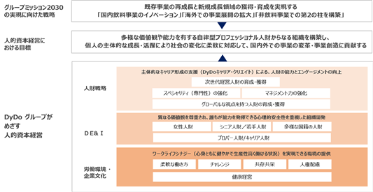
② 指標及び目標
当社グループがめざす人的資本経営における目標は、多様な自律型プロフェッショナル人財からなる組織を構築し、個人の主体的な成長・活躍により社会の変化に柔軟に対応して、国内外の事業変革・事業創造に貢献することと設定しています。その実現度を図る重要な指標として「従業員エンゲージメントスコア」を設定していますが、その目標数値とその他の指標については「人財戦略」、「DE＆I（ダイバーシティ・エクイティ＆インクルージョン）※」、「労働環境・企業文化」における対応策の具体化に合わせて適切に設定していきます。
※多様性を尊重し、個々の状況に合わせた公平性のある機会を提供し、全員が能力を発揮できる環境を実現するという考え方
■人的資本経営の実現に向けた方針と取り組み
ⅰ.人財戦略に関して
当社グループの人財戦略の方針は、主体的なキャリア形成の支援による、人財の能力とエンゲージメントの向上です。外部環境の変化に対応して目標達成するためには、多様な分野における専門性の強化と、様々な環境における組織やプロジェクトのマネジメント力の強化が極めて重要となります。また、グループミッション2030では「海外での事業展開の拡大」を基本方針の一つに掲げており、グローバルな視点を持つ人財の育成・獲得が欠かせません。当社グループは、その実現に向けて、これまでの人財に関する取り組みを進化させ、従業員の主体的キャリア形成を支援する仕組み「DyDoキャリア・クリエイト」を導入します。グループ全体で個人のキャリア形成に主眼を置いた人事制度・育成プログラム・評価制度等を導入し、これらの運用を通じて、求める資質を備えた人財一人ひとりの成長とエンゲージメントの向上を図り、最終的に能力の多様性に富む強い組織の構築をめざします。なお、「DyDoキャリア・クリエイト」における施策は、優先度の高いものから、各セグメントの状況に合わせて段階的に導入を進めていきます。
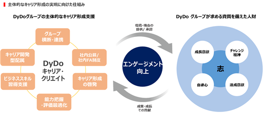
主要子会社であるダイドードリンコ株式会社では、その先行事例として、人事総務部内に自販機営業部門専属のHRBP（ヒューマンリソースビジネスパートナー）を配置し、事業計画達成に必要な営業人員の確保及び飲料補充を行うルート担当者からの転身者や中途採用者など未経験者への体系的な育成プログラムの展開による自販機営業における活躍を支援する取り組みをスタートしました。
また、国内飲料事業におけるビジネススキル習得支援として2020年9月より副業制度を導入し約60名が本制度を活用していますが、2024年9月より食品事業での本制度導入を計画しており、今後はグループ全体でさらなる活用促進を図っていきます。
ⅱ.DE＆Iに関して
当社グループは、人財一人ひとりの活躍を後押しするために、多様な価値観が尊重され、誰もが自由に意見を述べ、能力を発揮できる心理的安全性を重視した組織開発を進めます。多様性の実現に向けた課題は事業毎に異なりますが、まずは2023年1月に新設した「ダイバーシティ推進グループ」を中心に、グループ各社のDE＆Iにおける課題を把握しながら、解決に必要な制度の拡充、業務プロセスの改善やテクノロジー活用した効率化を実現し、多様な人財が活躍できる組織作りを推進していきます。
主要子会社であるダイドードリンコ株式会社では、従来は男性中心だった自販機設置先の新規開拓を担う営業職において女性比率を向上させることで、自社における女性人財の活躍推進とともに、女性の視点を生かした新たな価値を提供する自販機の展開を通じて、女性が働きやすい社会・環境づくりへの貢献という付加価値の創出をめざしています。
ⅲ.労働環境・企業文化に関して
人的資本経営を実行するための基盤となるのが、労働環境・企業文化です。当社グループは、心身ともに健やかでかつ生産性高く働ける状況、すなわちワークライフシナジーを実現できる環境を整備すべく、健康経営の推進やリモートワークなど柔軟な働き方を推進しています。主要子会社ダイドードリンコ株式会社は、経済産業省が推進する「健康経営優良法人認定制度」において、「健康経営優良法人2024（大規模法人部門）」に認定されました。
また近年、重要性が高まっているのが、自社やサプライチェーンにおける人権配慮です。当社グループは、創業以来大切にしている「共存共栄の精神」に基づき、一人ひとりの人権が尊重される社会の実現に向け、2024年3月に「DyDoグループ人権方針」を策定しました。これは、当社グループの企業活動における人権尊重を徹底するための最上位方針です。今後、この方針に基づく人権デュー・デリジェンス等の実施に向け、グループサステナビリティ委員会の下に「グループ人権分科会」を新設し、人権尊重に関する取り組みをさらに推進していきます。
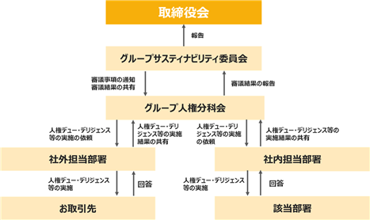
当社グループの経営成績及び財政状態などに重要な影響を及ぼす可能性のある事項には、以下のようなものがあります。なお、以下に記載している将来に関する事項は、当連結会計年度において当社グループが判断したものであり、事業等のリスクはこれらに限られるものではありません。
当社グループでは、企業理念に基づく経営戦略達成において発生する様々な阻害要因をリスクと位置付け、「内部統制システムの整備に関する基本方針」に基づき、当社グループにおけるリスク管理体制に関する基本的事項を定め、リスク管理の効率的かつ確実な運用を図っています。常設委員会として、代表取締役社長を委員長とする「グループリスク管理委員会」を年2回開催するほか、必要に応じて都度開催することとしています。「グループリスク管理委員会」は、リスク管理の方針や重要リスクの評価及び対策の承認、統制状況の効果検証・是正指導等の役割を担っています。
グループリスク管理委員会においては、リスク項目を「グループ横断のリスク」と「事業特有のリスク」に分類して整理し、評価を行っています。さらに、当連結会計年度より採用した新たなリスクマネジメントの手法として、TCFDの枠組みを活用した、人口動態の変化に伴う中長期的なリスクに対する評価を実施しました。
（1）グループリスク管理委員会で特に議論された重要リスク
当連結会計年度のグループリスク管理委員会においては、影響度・発生可能性の高い重要リスクを抽出し、足元の業績に影響を与えるリスクが高まっている「原材料・資材の調達」及び「生産・物流体制」について議論を行いました。また、独自で実施した人口動態の変化に伴う中長期リスク分析の結果により、グループとして「人財の確保・育成」に関するリスクについて、中長期的に対策を検討していくべきとの認識が示されました。
（2）経営成績等に与える影響の内容及び当該リスクへの対応策等
当連結会計年度のグループリスク管理委員会が評価した重要リスクと対応策等は、次の通りです。
①事業横断的なリスク
ⅰ.原材料・資材の調達
当社グループの商品には、多種多様な原料・資材が使用されていますが、中でも国内飲料事業の主要原料であるコーヒー豆は国際市況商品であり、その価格は、商品相場だけでなく為替レートの変動の影響を受けます。価格変動の影響を受けることについては、他の原材料・資材についても同様であり、直近のエネルギーコスト上昇も相俟って、原材料・資材の調達コストの高騰は、当社グループの経営成績等に重要な影響を及ぼす可能性があります。
当社グループは、これらのリスクの低減を図るため、国内飲料事業及び食品事業において、2022年10月より段階的に商品の価格改定を実施したほか、海外飲料事業（トルコ事業）においては、強いインフレ下にあるトルコにおいて戦略的な価格改定を継続的に実施する等、適正な限界利益率の確保による収益構造の改善に取り組んでいます。
ⅱ.生産・物流体制
近年、生産・物流を取り巻く経営環境は大きく変化しており、人手不足やコンプライアンスの厳格化を背景とした物流コストの大幅な上昇や、物流キャパシティーの逼迫による供給リスクが高まっています。
社会情勢の変化を背景とした物流コストの上昇リスクは、当面続くことが想定されることから、当社グループの経営成績等に重要な影響を及ぼす可能性があります。
当社グループは、これらのリスクの低減を図るため、澁澤倉庫株式会社との合弁によるダイドー・シブサワ・グループロジスティクス株式会社を2018年6月に設立し、物流業界との連携強化による安定的な物流網の確保、「物流の2024年問題」を見据えた配送拠点の見直し等の取り組みを推進しています。
ⅲ.海外情勢
ロシア・ウクライナ情勢やパレスチナ・イスラエル情勢に起因した資材価格・原油価格の高騰、為替相場の急激な変動等、近年、地政学リスクをはじめとする海外情勢の変化が、日本国内での事業活動にも影響を及ぼす可能性が高まっています。また、海外における事業展開には、各国の法令・制度、政治・経済・社会情勢、文化・宗教・商習慣の違いや為替レートの変動をはじめとした様々なリスクが存在します。
当社グループは、これらのリスクの低減を図るため、持株会社の海外事業統括部が海外子会社を管理・統括する体制とし、既存のトルコ・中国事業の基盤を活かしながら、海外事業戦略の再構築を進めていきます。
ⅳ.企業買収及び事業・資本提携
当社グループは、「グループミッション2030」に掲げた2030年のありたい姿の実現に向けて、企業買収及び事業・資本提携等の戦略的投資も事業拡大を加速するための有効な手段として、その可能性を常に検討しています。しかしながら、有効な投資機会を見出せない場合や、当初期待した戦略的投資効果を得られない場合には、成長戦略の推進に遅れが生じる等、当社グループの経営成績等に影響を及ぼす可能性があります。また、企業買収等により新規事業領域・新規市場へ参入する場合には、その事業・市場固有のリスクが新たに加わる可能性があります。
当社グループは、これらのリスクの低減を図るため、取締役会の実効性評価を毎年1回実施、またグループとしての投資領域とその優先度について議論をする枠組みを立ち上げるなどコーポレート・ガバナンスの継続的改善に向けた取り組みを進めています。
ⅴ.環境問題への対応（気候変動問題）
気候変動をはじめとする環境問題への企業の取り組み姿勢に対するステークホルダーからの評価や市場の価値観の変化は、消費者の商品・サービスの選択に大きく影響するものとなっており、気候変動抑制のため、世界的規模でのエネルギー使用の合理化や地球温暖化対策等の法令等の規制も強まっています。
また、気候変動に起因する水資源の枯渇、コーヒーをはじめとする原材料への影響、大規模な自然災害による製造設備の被害等のサプライチェーンに関わる物理的リスクが顕在化した場合、当社グループの経営成績等に重要な影響を及ぼす可能性があります。
当社グループは、これらのリスクの低減を図るため、TCFDのフレームワークに基づいた実態の把握と対応策の検討を継続的に実施しています。気候変動リスクは中長期的に顕在化する可能性を有することから「グループリスク管理委員会」と「グループサステナビリティ委員会」の両委員会を連動させながらマネジメントを行っています。
②事業特有のリスク
ⅰ.トルコ国内のハイパーインフレに関連するリスク
海外飲料事業の中で大きなウエイトを占めるトルコ飲料事業は、主力ブランドであるミネラルウォーター「Saka（サカ）」は、消費者の健康志向を背景に着実に成長を続けており、中長期的にも成長が期待されています。一方、トルコにおける3年間の累積インフレ率が100％を超えたことを示したため、当社グループは、トルコリラを機能通貨とするトルコの子会社について、超インフレ経済下で営業活動を行っていると判断しました。このため、当社グループは、トルコの子会社の財務諸表について、IAS第29号「超インフレ経済下における財務報告」に定められる要件およびトルコ現地会計基準に従い、会計上の調整を加えています。今後、トルコにおけるインフレがさらに深刻化した場合、会計上の調整が多額にのぼり、当社グループの経営成績等に重要な影響を及ぼす可能性があります。
また、商標権を含む固定資産の修正再表示額は、通常の固定資産と同様に減損の要否を検討し、その修正再表示額が回収可能価額を超過する場合は回収可能価額まで減損する必要がある等、当社グループの経営成績等に重要な影響を及ぼす可能性があります。
当社グループは、これらのリスクに対応するため、持株会社の財務部による、収益管理、キャッシュ・コンバージョンサイクルに関する管理体制を強化・拡充するとともに、トルコ現地子会社においては、継続的な価格改定の実施による適正な限界利益率の確保や、トルコからの輸出取引の拡大等によるリスクの低減に努めています。
ⅱ.既存の自販機ビジネスへの集中・依存
当社グループのコアビジネスである国内飲料事業の自販機チャネルは、従来、価格安定性・販売安定性が比較的高く、収益性の高い缶コーヒーを主力商材として、安定的なキャッシュ・フローを確保することが可能でしたが、近年、自販機オペレーションを担う人手不足の問題等による自販機市場全体の総台数の減少傾向や原材料・資材の高騰による収益性の低下が課題となっています。当社グループの既存の自販機ビジネスが、これらの環境変化に対応できなかった場合、当社グループの経営成績等に重要な影響を及ぼす能性があります。
当社グループは、「自販機ビジネスの進化による社会的価値の創造」をマテリアリティに掲げ、市場の変化に柔軟に対応できる持続可能な自販機ビジネスモデルの確立をめざしています。
当社グループは、今後の労働力不足の時代に対応すべく、最新のテクノロジーを活用したスマート・オペレーションのさらなる進化に取り組むとともに、カーボンニュートラルに対応した“お客様と共にサステナブルな未来を創る”自販機「LOVE the EARTHベンダー」の展開を進めています。今後とも、自販機の設置先との協働も含め、DyDoの店舗である自販機を通じて、お客様の求める価値をお届けすることにより、自販機市場における確固たる優位性を確立していきます。
ⅲ.希少疾病用医薬品事業への参入
当社グループは、成長性の高いライフサイエンス分野をはじめとするヘルスケア関連市場を次なる成長領域と定め、その中でも希少疾病と呼ばれる国内患者数が5万人未満の難病に着目し、2019年1月に、ダイドーファーマ株式会社を設立しました。2023年12月には、ダイドーファーマ株式会社として初めての治療薬の承認申請を行うなど、着実に歩みを進めていますが、希少疾病用医薬品の開発には不確実性を伴うことから、開発の延長や中止を行う可能性、想定通りの内容で薬事承認が下りない、または薬事承認に想定以上の時間を要する可能性、想定した薬価を下回る可能性等があります。また、事業基盤が安定するまでの先行投資期間においては、継続的に営業損失を計上し、キャッシュ・フローはマイナスが続くことから、当社グループの経営成績等に影響を及ぼす可能性があります。
当社グループは、これらのリスクの低減を図るため、医薬品業界における豊富な知識と経験を有する独立社外取締役を選任し、個々の開発プロジェクトに基づくダイドーファーマ株式会社の事業計画に対するモニタリングを強化し、また医薬品業界の経験を長く積んだ、事業開発、新薬開発、薬事、メディカルアフェアーズ、そして承認取得後の体制を含めたエキスパート人材を整え、外部の有識者、機関、企業等の協力や支援を仰ぎながら、事業運営を推進していきます。
上記以外にも事業活動を進めていく上において、経済情勢の変化、法規制、情報セキュリティの様々なリスクが当社グループの経営成績等に影響を及ぼす可能性があります。
当社グループは、こうしたリスクを回避、またはその影響を最小限に抑えるため、リスクの影響度・発生可能性を分析した「リスクマップ」を作成し、環境の変化に応じた重要リスクを決定・対策を講じることにより、リスクマネジメントを推進しています。
（3）人口動態の変化による中長期的リスク
人口減少・少子高齢化が続く国内市場を中心に、人口動態の変化がビジネスに与える影響は、今後ますます高まっていくと当社グループでは考えています。当連結会計年度より、シナリオ分析のフレームワークを応用し、サプライチェーン全体の中で注視すべき中長期的なリスクに対する評価を実施しました。
|
リスク項目 |
事業インパクト |
↑：非常に大きな影響 ↗：やや大きな影響 →：軽微な影響 |
現時点で実施している対応策 |
|||
|
分類 |
サプライ チェーン |
考察 |
中期（2026年） |
長期 （2030年） |
||
|
生産年齢 人口の減少 |
営業・ |
■国内飲料事業 |
↗ |
↑ |
・スマート・オペレーションの推進 |
|
|
製造・ |
■医薬品関連事業 適切なスキル・知識を持った専門人財の確保ができないリスク |
↗ |
↑ |
・キャリア採用の強化 |
||
|
■食品事業 製造部門における人財確保が進まないことによる需要に応じた製造ができないリスク |
↗ |
↑ |
・省人化に向けた設備の導入・更新 ・多様な人財の確保 |
|||
|
採用 |
■医薬品関連事業、食品事業 未来の事業を支える新卒採用者の確保ができないリスク |
↗ |
↑ |
・新卒採用者向けの新たな施策の実施 ・グループ連携での人財育成の計画 |
||
人口減少の影響は、一部の分野で売上・利益への影響を及ぼすものの、事業の縮小に繋がる可能性は限定的で事業戦略による対応が充分可能だと考えています。しかしながら人財の確保においては、中長期的に重要な影響を及ぼす可能性があることを認識しています。
当社グループでは、これらのリスクに対応するために、人財育成や生産性の向上に向けた人財投資を強化しています。今後も継続的なリスクのモニタリングを実施するとともに、リスク低減に向けた対応策の検討を中長期的な視点で実施していきます。
（1）経営成績等の状況の概要
当連結会計年度における当社グループの財政状態、経営成績及びキャッシュ・フローの状況（以下、「経営成績等」という。）の概要は、以下の通りであります。
①財政状態及び経営成績の状況
当連結会計年度（2023年1月21日～2024年1月20日）における我が国経済は、新型コロナウイルス感染症の5類感染症への移行により経済活動の正常化が進む中、人流の回復やインバウンド需要の回復により、景気が緩やかに持ち直しました。しかしながら、既往の物価上昇、金融資本市場の変動、中東地域をめぐる情勢など、引き続き先行きは不透明な状況が続いています。飲料業界におきましては、記録的な猛暑が清涼飲料の販売を後押ししましたが、原材料価格の高騰や急激な円安を背景とした価格改定により、消費者の節約志向は依然継続しています。また、当社グループの海外主要市場であるトルコでは、昨年6月の政策金融会合以降、従来の低金利政策から一転し、高インフレ抑制に向けた政策金利の引き上げが段階的に実施されました。しかしながら、足元ではインフレ率の上昇・リラ安はさらに加速しており、依然として予断を許さない状況が続いています。このような状況の中、当社グループは2030年のありたい姿「グループミッション2030」に掲げた「世界中の人々の楽しく健やかな暮らしをクリエイトするDyDoグループへ」の実現に向け、「中期経営計画2026」に基づいた活動を着実に進めています。当連結会計年度において、育成中の希少疾病用医薬品事業を除き全セグメントで増収・増益となり、連結売上高は2,133億70百万円（前連結会計年度比33.2％増）、連結営業利益は37億32百万円（前連結会計年度比427.9％増）となりました。
〈連結経営成績〉
（単位：百万円）
|
|
前連結会計年度 |
当連結会計年度 |
||
|
実績 |
増減率（％） |
増減額 |
||
|
売上高 |
160,130 |
213,370 |
33.2 |
53,239 |
|
営業利益 |
707 |
3,732 |
427.9 |
3,025 |
|
経常利益 |
591 |
3,115 |
426.5 |
2,523 |
|
親会社株主に帰属する当期純損益 |
△507 |
4,423 |
－ |
4,930 |
前第2四半期連結会計期間より、海外飲料事業の主要拠点であるトルコにおいて3年間の累積インフレ率が100％を超えたことを受け、トルコリラを機能通貨とするトルコの子会社について、IAS第29号「超インフレ経済下における財務報告」（以下、超インフレ会計）に定められる要件に従い、会計上の調整をしています。
（ご参考）超インフレ会計に定められる要件による会計上の調整額
（単位：百万円）
|
|
前連結会計年度 |
当連結会計年度 |
||
|
IAS第29号 調整前 |
調整額 |
IAS第29号 調整前 |
調整額 |
|
|
売上高 |
159,561 |
569 |
213,453 |
△83 |
|
営業利益 |
1,851 |
△1,144 |
5,065 |
△1,332 |
|
経常利益 |
2,015 |
△1,423 |
4,078 |
△962 |
|
親会社株主に帰属する 当期純利益 |
1,276 |
△1,784 |
4,130 |
292 |
なお、連結損益計算書の主要項目ごとの前連結会計年度との主な増減要因等は、次の通りであります。
ⅰ.売上高
当連結会計年度の売上高は、2,133億70百万円（前連結会計年度比33.2％増）となりました。
当社の連結子会社であるダイドードリンコ株式会社（以下、ダイドードリンコ）とアサヒ飲料株式会社（以下、アサヒ飲料）との自動販売機事業に関する包括的業務提携により、2023年1月にダイナミックベンディングネットワーク株式会社（以下、ダイナミックベンディングネットワーク）を設立し、アサヒ飲料の100％出資子会社3社が当社の連結子会社となったことに加え、価格改定による販売単価の上昇により、国内飲料事業の売上高が大幅に増加しました。また、海外飲料事業については、トルコにおいて高インフレが継続する中、戦略的な価格改定と販売促進活動を機動的に実施し、販売ボリューム・金額ともに前連結会計年度を上回り、大幅増収となりました。医薬品関連事業については、パウチ製品の好調な受注が続いたことや、価格改定による販売単価の上昇により、連結会計年度として過去最高の売上高となりました。食品事業については、猛暑や最盛期以降の温暖な気候の継続、営業・販売促進活動による好調な販売に加え、価格改定による販売単価の上昇により、増収となりました。
ⅱ.営業利益
当連結会計年度の営業利益は37億32百万円（前連結会計年度比427.9％増）となりました。
国内飲料事業については、依然として容器・包装価格やエネルギーコストの高騰による影響はあるものの、2022年10月及び2023年5月に実施した価格改定の効果が順調に出たこと、また、2023年11月に実施した自販機チャネルにおける価格改定も一部寄与したことなどにより、大幅増益となりました。海外飲料事業については、超インフレ会計適用による会計上の調整により、セグメント利益が毀損されていますが、主力のトルコ子会社において増収効果やコスト削減により、過去最高のセグメント利益となりました。医薬品関連事業については、価格改定などによる売上高の増加により製造原価上昇の影響を吸収し、増益を確保しました。食品事業については、原材料価格や労務費などの上昇による影響はあったものの、売上高の増加によりコスト増を吸収し、増益となりました。
ⅲ.経常利益
当連結会計年度の経常利益は、31億15百万円（前連結会計年度比426.5％増）となりました。
営業外収益は、前連結会計年度と比較して6億92百万円増加し、18億94百万円となりました。また、営業外費用はトルコにおける通貨安の影響により為替差損13億48百万円を計上したことなどから、前連結会計年度と比較して11億94百万円増加し、25億11百万円となりました。
ⅳ.親会社株主に帰属する当期純損益
当連結会計年度の親会社株主に帰属する当期純利益は44億23百万円（前連結会計年度は5億7百万円の親会社株主に帰属する当期純損失）となりました。
特別利益は、投資有価証券売却益20億25百万円を計上したほか、保険金収入4億21百万円を計上し、24億47百万円となりました。また、海外飲料事業の大半を占めるトルコ子会社において、従来のIFRSによるIAS第29号「超インフレ経済下における財務報告」だけでなく、トルコ現地の税務および会計処理においてもインフレ会計が適用された影響などにより繰延税金資産を計上し、それに伴い法人税等調整額△20億31百万円を計上しました（△は利益）。
当連結会計年度の1株当たり当期純利益は、140.77円（前連結会計年度は16.20円の1株当たり当期純損失）となりました。なお、当社は2024年1月21日付で普通株式１株につき2株の割合で株式分割を行っており、1株当たり当期純利益および1株当たり当期純損失については、前連結会計年度の期首に当該株式分割が行われたと仮定して算出しています。
〈セグメント別経営成績〉
（単位：百万円）
|
|
売上高 |
|||
|
前連結会計年度 |
当連結会計年度 |
増減率 |
増減額 |
|
|
国内飲料事業 |
109,770 |
153,623 |
39.9 |
43,853 |
|
海外飲料事業 |
18,909 |
26,444 |
39.9 |
7,535 |
|
医薬品関連事業 |
12,522 |
12,963 |
3.5 |
440 |
|
食品事業 |
19,565 |
20,705 |
5.8 |
1,139 |
|
希少疾病用医薬品事業 |
－ |
－ |
－ |
－ |
|
調整額 |
△636 |
△366 |
－ |
270 |
|
合計 |
160,130 |
213,370 |
33.2 |
53,239 |
（単位：百万円）
|
|
セグメント利益又は損失(△) |
|||
|
前連結会計年度 |
当連結会計年度 |
増減率（％） |
増減額 |
|
|
国内飲料事業 |
2,758 |
4,255 |
54.3 |
1,497 |
|
海外飲料事業 |
△1,091 |
1,110 |
－ |
2,201 |
|
医薬品関連事業 |
347 |
367 |
5.7 |
19 |
|
食品事業 |
765 |
993 |
29.7 |
227 |
|
希少疾病用医薬品事業 |
△499 |
△796 |
－ |
△297 |
|
調整額 |
△1,573 |
△2,197 |
－ |
△623 |
|
合計 |
707 |
3,732 |
427.9 |
3,025 |
（注1）報告セグメントごとの売上高は、セグメント間の内部売上高を含んでいます。
（注2）海外飲料事業について、超インフレ会計に定められる要件に従い、会計上の調整をしています。この調整により、前連結会計年度において、売上高は5億69百万円増加、セグメント利益は11億44百万円減少、当連結会計年度において、売上高は83百万円減少、セグメント利益は13億32百万円減少しています。
ⅰ．国内飲料事業
国内飲料事業はグループのコア事業であり、ダイドードリンコとその傘下のグループ会社が担っています。主力の自販機チャネルにおいて、2030年のありたい姿を「自販機市場において、絶え間ない挑戦と共創で新しい価値を提供し、トップランナーとして業界をリードし続けます」と定め、自販機市場における確固たる優位性の確立に取り組んでいます。2023年の国内飲料市場動向は、各社が実施した価格改定による影響があったものの、人流の回復や記録的な猛暑による恩恵を受けて、前年同期並みの販売数量となりました。
このような状況の中、当社グループの国内飲料事業においては、2023年1月に設立したダイナミックベンディングネットワークによる子会社増加効果のほか、2022年10月及び2023年5月に実施した価格改定、さらに2023年11月に実施した自販機チャネルにおける価格改定の効果も一部寄与したことなどにより、大幅な増収となりました。
また、子会社増加効果を除いても、価格改定による販売単価の上昇などにより売上高は前連結会計年度を大きく上回りました。一方で、子会社増加効果を除いた販売数量は前連結会計年度を下回っております。背景には価格改定による影響のほか、稼働自販機台数減少の影響などがありますが、自販機台数の減少については、期初より実施をした低採算自販機の戦略的引き上げによるもので、一時的なものとみております。今後も優良ロケーションへの新規開発・引き上げ抑止を進め、台数の増加をめざしていきます。
|
自販機を通じた顧客や社会の課題解決の一環として、2023年10月より女性ヘルスケア応援自販機の展開を行っております。昨今、「女性活躍推進」に向け、女性の働き方が大きく見直されてきた中、企業や自治体・行政など社会全体で、女性がこれまで以上に活躍できる環境づくりが進んできました。そうした中、当社は主力チャネルである自販機を通じて、新たな社会貢献の形として、飲料とともに女性用衛生用品（生理用ナプキン）を購入することができる「女性ヘルスケア応援自動販売機」の展開を開始しました。 |
|
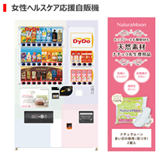 |
|
商品戦略としては、当社のブランドメッセージ「こころとからだに、おいしいものを。」を体現した各商品を発売しております。例えば、2023年12月に機能性表示食品としてリニューアル発売した「肌美精企画監修※」シリーズは、変化する女性の価値観・健康ニーズを捉え、“女性の健康キレイ”を応援する無糖茶です（一部、2024年3月の発売予定含む）。機能性表示食品としたことで、これまで以上にお客様にとってわかりやすく選びやすい商品に生まれ変わりました。 |
|
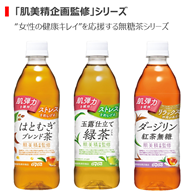 |
セグメント利益は、価格改定による増収効果で原材料価格高騰による影響を吸収したことなどにより、増益となりました。
以上の結果、国内飲料事業の売上高は1,536億23百万円（前連結会計年度比39.9％増）、セグメント利益は42億55百万円（前連結会計年度比54.3％増）となりました。
※ 肌美精は、クラシエ株式会社の保有する商標かつブランド名です。女性の健康的な生活を応援する商品のコン
セプトおよびデザインを監修（機能性表示食品の届出表示は本監修に含みません）。
ⅱ．海外飲料事業
当社グループの海外飲料事業は、2016年に現地企業のM＆Aにより進出したトルコ飲料事業が大きなウエイトを占め、現地ブランドの製造・販売を行っています。2030年のありたい姿を「世界中の人々の健康を支えるグローバルブランドを生み出します。」と定め、まずはトルコ飲料事業の拡大・安定化に取り組んでいます。
当連結会計年度におけるトルコ市場は、高インフレ抑制に向けた高金利政策が打ち出されたものの、高インフレ・リラ安の苦境からは抜け出すことができておらず、依然として厳しい事業環境が続いています。
このような状況の中、当社グループの海外飲料事業において、戦略的な価格改定と販売促進活動を機動的に実施したこと、また下期には中東問題を受け、国内外から当社一部商品への特需が発生したことなどにより、販売ボリューム・金額ともに伸ばし、大幅増収となりました。
セグメント利益は、インフレやリラ安を背景とした原材料価格の高騰、人件費の上昇などの影響を受けましたが、売上高の増加に加え、コスト削減施策が奏功し、過去最高益を記録しました。
中国飲料事業では、現地生産品の「おいしい麦茶」「おいしい紅茶」などの販売は好調に推移しており、中国飲料市場の無糖茶カテゴリにて一定のポジションを確立しています。
以上の結果、海外飲料事業の売上高は264億44百万円（前連結会計年度比39.9％増）、セグメント利益は11億10百万円（前連結会計年度は10億91百万円のセグメント損失）となりました。
ⅲ．医薬品関連事業
医薬品関連事業を担う大同薬品工業株式会社（以下、大同薬品工業）では、医薬品・指定医薬部外品をはじめとする数多くの健康・美容等のドリンク剤とパウチ製品の受託製造に特化したビジネスを展開し、2030年のありたい姿を「健康・美容分野での製造受託企業No.1になります。」と定めています。お客様ニーズにあった製品の開発と、奈良工場・関東工場の2拠点4工場を展開する充実した生産体制と高い品質管理体制を強みとして、医薬品メーカーから化粧品メーカーまでの幅広い顧客基盤を有しています。
当連結会計年度におけるドリンク剤市場は、昨今の人流回復を背景にコロナ禍の落ち込みから回復しつつあります。また、当社が2020年に参入したパウチ製品についても継続的に市場が拡大しており、今後も引き続き拡大基調が続く見通しとなっています。
このような状況の中、当社グループの医薬品関連事業においては、パウチ容器入りの指定医薬部外品の受注増加のほか、価格改定による販売単価の上昇により、過去最高の売上高となりました。
セグメント利益は、原材料価格が上昇した影響を受けましたが、生産量の増加や販売単価上昇などによる売上高の増加により、増益となりました。
以上の結果、医薬品関連事業の売上高は129億63百万円（前連結会計年度比3.5％増）、セグメント利益は3億67百万円（前連結会計年度比5.7％増）となりました。
ⅳ．食品事業
食品事業を担う株式会社たらみ（以下、たらみ）は、様々な食感を自在に実現する「おいしいゼリー」を作る技術力とブランド力を大きな強みとして、ドライゼリー市場においてトップシェアを誇るほか、蒟蒻パウチゼリー市場においても一定のシェアを獲得しています。2030年のありたい姿を「フルーツとゼリーを通して、『おいしさ』と『健康』を追求し、すべての人を幸せにします。」と定め、「たらみらしい、おいしい、楽しい」商品をあらゆる販売チャネルで購入できる機会の創造に取り組んでいます。
当連結会計年度のゼリー市場は、記録的な猛暑や最盛期以降の温暖な気候の継続を背景に需要が拡大し、ドライゼリー市場は前年同期比4%増、蒟蒻パウチゼリー市場は前年同期比3%増となりました。
このような状況の中、当社グループの食品事業は、需要増を最大限に取り込むための営業・販売促進活動を行い、プライベートブランド品を含めた商品の販売が好調に推移したほか、価格改定による販売単価の上昇により、増収となりました。
セグメント利益は、売上高の増加効果で原材料価格や労務費などのコスト上昇を吸収し、増益となりました。
以上の結果、食品事業の売上高は207億5百万円（前連結会計年度比5.8％増）、セグメント利益は9億93百万円（前連結会計年度比29.7％増）となりました。
ⅴ．希少疾病用医薬品事業
希少疾病用医薬品事業を担うダイドーファーマ株式会社は、当社グループの新規事業領域拡大への取り組みとして、2019年に設立しました。2030年のありたい姿を「治療選択肢のない希少疾病に苦しむ患者様へ治療薬を提供します」と定め、希少疾病を対象とした治療薬候補品の日本国内のライセンス許諾を獲得して、開発、製造販売承認の取得をめざしています。
2023年12月には、DYD‐301（一般名：アミファンプリジンリン酸塩）について、ランバート・イートン筋無力症候群（以下「LEMS」という。）患者への治療を適応とする製造販売承認の申請を行いました。引き続き、本品の承認取得、および他の候補品の開発推進、ならびに新たな治療薬候補となる優良なパイプラインの獲得に向けて活動を続けていきます。
以上の結果、希少疾病用医薬品事業のセグメント損失は7億96百万円（前連結会計年度は4億99百万円のセグメント損失）となりました。
なお、当社グループは、飲料・食品の製造販売を主たる業務としており、四半期単位での経営成績には、季節的変動があります。
（単位：百万円）
|
連結売上高 |
第1四半期 |
第2四半期 |
第3四半期 |
第4四半期 |
計 |
|
2023年1月期 |
34,912 |
44,868 |
44,859 |
35,490 |
160,130 |
|
通期に占める割合（％） |
21.8 |
28.0 |
28.0 |
22.2 |
100.0 |
|
2024年1月期 |
47,102 |
54,643 |
63,531 |
48,092 |
213,370 |
|
連結営業損益 |
第1四半期 |
第2四半期 |
第3四半期 |
第4四半期 |
計 |
|
2023年1月期 |
△986 |
1,710 |
1,602 |
△1,619 |
707 |
|
通期に占める割合（％） |
－ |
241.8 |
226.6 |
－ |
100.0 |
|
2024年1月期 |
△539 |
3,066 |
3,264 |
△2,059 |
3,732 |
〈財政状態〉
（単位：百万円）
|
|
前連結会計年度末 |
当連結会計年度末 |
増減額 |
|
|
|
流動資産 |
81,113 |
89,093 |
7,979 |
|
固定資産 |
83,091 |
88,470 |
5,378 |
|
|
資産合計 |
164,204 |
177,563 |
13,358 |
|
|
|
流動負債 |
43,275 |
48,785 |
5,509 |
|
固定負債 |
36,861 |
37,297 |
436 |
|
|
負債合計 |
80,137 |
86,082 |
5,945 |
|
|
純資産合計 |
84,067 |
91,480 |
7,413 |
|
当連結会計年度末の総資産は、前連結会計年度末と比較して133億58百万円増加し、1,775億63百万円となりました。これは、ダイナミックベンディングネットワークの設立に伴い、売掛金や棚卸資産が増加したことなどによるものです。また、負債についても、同様に新会社設立の影響で買掛金が増えたことなどにより、前連結会計年度末と比較して59億45百万円増加し、860億82百万円となりました。
当社グループの連結財政状態の前連結会計年度末と比較した主な増減要因等は、次の通りです。
ⅰ.ネット・キャッシュ
当連結会計年度末の金融資産（現金及び預金、有価証券、投資有価証券（関係会社株式を除く）、長期性預金）は、前連結会計年度末と比較して2億15百万円減少し、622億25百万円となりました。また、当連結会計年度末の有利子負債（短期/長期借入金、短期/長期リース負債・債務、社債、長期預り保証金）は、前連結会計年度末と比較して、11億69百万円減少し、352億24百万円となりました。
以上の結果、当連結会計年度末のネット・キャッシュ（金融資産－有利子負債）は、前連結会計年度末と比較して9億54百万円増加し、270億円となりました。
ⅱ.運転資本
当連結会計年度末の売上債権は、前連結会計年度末と比較して33億72百万円増加し、221億91百万円となりました。また、当連結会計年度末の棚卸資産は、前連結会計年度末と比較して27億1百万円増加し、142億89百万円となりました。一方、当連結会計年度末の仕入債務は、前連結会計年度末と比較して31億14百万円増加し、239億38百万円となりました。
以上の結果、当連結会計年度末の運転資本（売上債権＋棚卸資産－仕入債務）は、前連結会計年度末と比較して29億59百万円増加し、125億42百万円となりました。
ⅲ.固定資産
当連結会計年度末の有形固定資産・無形固定資産は、前連結会計年度末と比較して28億53百万円増加し、599億70百万円となりました。また、投資その他の資産は25億25百万円増加し、285億円となりました。ここには、トルコ子会社において従来のIFRSによる超インフレ会計だけでなく、トルコ現地の税務及び会計処理においてもインフレ会計が適用されたことなどにより、繰延税金資産が21億50百万円増加し、22億68百万円となった影響が含まれています。
以上の結果、当連結会計年度末の固定資産は、前連結会計年度末と比較して53億78百万円増加し、884億70百万円となりました。
ⅳ.純資産
当連結会計年度末の株主資本は、前連結会計年度末と比較して51億92百万円増加し901億59百万円となりました。
当連結会計年度末のその他有価証券評価差額金は、政策保有株式の時価変動により、前連結会計年度末と比較して59百万円減少し、57億87百万円となりました。また、当連結会計年度末の為替換算調整勘定は、主にトルコリラの為替変動により、前連結会計年度末と比較して6億79百万円増加し、△73億96百万円となりました。
以上の結果、当連結会計年度末の純資産は、前連結会計年度末と比較して74億13百万円増加し、914億80百万円となりました。
〈キャッシュ・フローの状況〉
（単位：百万円）
|
|
前連結会計年度 |
当連結会計年度 |
増減額 |
|
営業活動によるキャッシュ・フロー |
5,125 |
9,211 |
4,086 |
|
投資活動によるキャッシュ・フロー |
△5,025 |
△1,240 |
3,784 |
|
財務活動によるキャッシュ・フロー |
△1,120 |
△3,212 |
△2,091 |
|
現金及び現金同等物に係る換算差額 |
△16 |
△952 |
△935 |
|
超インフレの調整額 |
140 |
751 |
610 |
|
現金及び現金同等物の増減額 （△は減少） |
△896 |
4,557 |
5,454 |
|
現金及び現金同等物の期首残高 |
30,072 |
29,156 |
△916 |
|
連結除外に伴う現金及び現金同等物の減少額 |
△19 |
－ |
19 |
|
現金及び現金同等物の期末残高 |
29,156 |
33,713 |
4,557 |
当社グループのキャッシュ・フローの源泉である自販機ビジネスを取り巻く市場環境は、コロナ禍を契機として大きく変化しており、上位寡占化の傾向がより強いものとなっています。このような状況の中、当社グループは、収益性の高い新たな自販機設置先の開拓を進めると共に、最新のテクノロジーを活用したスマート・オペレーション体制の進化に向けた投資を着実に実行することで、国内飲料事業の再成長によるキャッシュ・フロー創出力向上を図っていきます。
〈ROIC実績〉
|
|
国内飲料事業※１ |
海外事業※2 |
非飲料事業※3 |
連結 |
|
2023年1月期（実績） |
3.6％ |
0.2％ |
4.2％ |
1.4％ |
|
2024年1月期（実績） |
5.8％ |
7.5％ |
4.1％ |
3.5％ |
（ご参考）グループミッション2030で掲げるROIC目標値
|
|
国内飲料事業※１ |
海外事業※2 |
非飲料事業※3 |
連結 |
|
成長ステージ （2023年1月期～2027年1月期） |
13％ |
3％ |
8％ |
6% |
|
飛躍ステージ （2028年1月期～2030年1月期） |
17％ |
5％ |
17％ |
8% |
※1 サプリメント通販事業を除く
※2 現行セグメントにおいては、海外飲料事業
※3 現行セグメントにおいては、国内飲料事業のうちサプリメント通販事業、医薬品関連事業、食品事業
当社グループの資本生産性の改善に向けては、従業員一人ひとりが資本効率性を意識することが肝要と考えています。そこで、グループミッション2030の最終年度のKPIのひとつとしてROICを設定し、進捗状況を可視化するために、現在遂行中の中期経営計画2026に該当する「成長ステージ」と最終ステージである「飛躍ステージ」の目標数値をそれぞれ設定しています。各セグメントにおいて、それぞれの事業特性に合わせた、利益率改善、資産回転率向上に向けたKPIを設定し、従業員それぞれが資本効率を意識した取り組みを進めることで、当社グループ全体の「稼ぐ力」を高めていきます。なお、各ROICの数字は超インフレ会計適用前の基準で算定をしています。
②生産、受注及び販売の実績
ⅰ．生産実績
当連結会計年度の生産実績をセグメント別に示すと次のとおりであります。
|
セグメントの名称 |
当連結会計年度 （自 2023年1月21日 至 2024年1月20日） |
前年同期比（％） |
|
海外飲料事業（百万円） |
18,139 |
140.1 |
|
医薬品関連事業（百万円） |
12,836 |
103.8 |
|
食品事業（百万円） |
20,380 |
104.6 |
|
合計（百万円） |
51,357 |
114.6 |
（注）金額は販売価格によっております。
ⅱ．商品仕入実績
当連結会計年度の商品仕入実績をセグメント別に示すと次のとおりであります。
|
セグメントの名称 |
当連結会計年度 （自 2023年1月21日 至 2024年1月20日） |
前年同期比（％） |
|
国内飲料事業（百万円） |
72,416 |
147.3 |
|
海外飲料事業（百万円） |
2,238 |
158.6 |
|
合計（百万円） |
74,655 |
147.6 |
ⅲ．受注実績
当連結会計年度における受注実績をセグメント別に示すと次のとおりであります。
|
セグメントの名称 |
当連結会計年度 （自 2023年1月21日 至 2024年1月20日） |
|||
|
受注高（百万円） |
前年同期比（％） |
受注残高(百万円) |
前年同期比（％） |
|
|
海外飲料事業 |
6,361 |
154.0 |
55 |
－ |
|
医薬品関連事業 |
13,190 |
109.8 |
3,460 |
125.8 |
|
合計 |
19,551 |
121.1 |
3,515 |
127.6 |
ⅳ．販売実績
当連結会計年度の販売実績については、「① 財政状態及び経営成績の状況」に記載のとおりであります。
③重要な会計上の見積り及び当該見積りに用いた仮定
当社グループの連結財務諸表は、わが国において一般に公正妥当と認められている会計基準に基づいて作成しております。連結財務諸表の作成にあたり、重要となる会計方針については、「第5 経理の状況 1[連結財務諸表等]（1）[連結財務諸表][注記事項]（連結財務諸表作成のための基本となる重要な事項）」に記載のとおりであります。
また、当社グループは、連結財務諸表の作成上、固定資産の減損会計、各種引当金の見積り計算、繰延税金資産の回収可能性の判断等に対し、現在入手可能な前提に基づく合理的な見積りを反映させておりますが、将来、これらの見積りと大きな差が生じる可能性があります。
連結財務諸表の作成に当たって用いた会計上の見積り及び当該見積りに用いた仮定のうち、重要なものについては、「第5 経理の状況 1[連結財務諸表等](1）[連結財務諸表][注記事項]（重要な会計上の見積り）」に記載のとおりであります。
財務諸表の作成に当たって用いた会計上の見積り及び当該見積りに用いた仮定のうち、重要なものについては、「第5 経理の状況 2[財務諸表等](1）[財務諸表][注記事項]（重要な会計上の見積り）」に記載のとおりであります。
該当事項はありません。
当社グループの研究開発活動は以下のとおりであり、当連結会計年度における研究開発費の総額は、
国内飲料事業では、それぞれの分野において商品開発、マーケティングから販売管理までを一貫してマネジメントし、自動販売機という販売網を自社で有する強みを生かしたロングセラー商品の開発と育成に努めております。
国内飲料事業に係る研究開発費は、
海外飲料事業では、トルコ飲料事業において新商品開発及び既存商品の改良を行っております。また、国内飲料事業とのシナジーの発揮による飛躍的成長の実現にチャレンジしております。
海外飲料事業に係る研究開発費は、
医薬品関連事業では、医薬品を中心とする数多くの健康・美容飲料等のドリンク剤の研究開発を重ね、お客様のニーズにあった製品の創造と厳格な品質管理や充実した生産体制により、安全で信頼される製品を製造しております。
医薬品関連事業に係る研究開発費は、
食品事業では、生産から販売に至るまでの構造改革並びに意識改革を加速させ、お客様の多面的なニーズに対応した、驚きや感動を生む商品開発に努めております
食品事業に係る研究開発費は、
希少疾病用医薬品事業では、希少疾病の医療用医薬品事業へ参入したダイドーファーマ株式会社において、2021年の1月と6月にライセンス契約を締結し、製造販売承認に向けた共同開発を継続しております。
希少疾病用医薬品事業に係る研究開発費は、